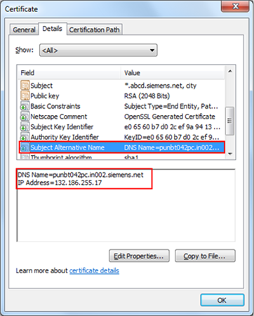

Certificate Types and Certificate Stores after Import
A certificate is an electronic ID that can be held by an application. The ID includes information that identifies the holder, the issuer, and a unique key that is used to create and verify digital signatures.
The syntax of these certificates conforms to the X.509 specification, and these certificates are also known as X.509 Certificates. The certificates also have an associated private key.
Certificate authority (CA) is an entity which issues digital certificates to organizations or people after validating them. Certification authorities have to keep detailed records of what has been issued and the information used to issue it and are audited regularly to make sure that they are following defined procedures. There are many commercial CAs that charge for their services (VeriSign). Institutions and governments may have their own CAs, and there are also free Certificate Authorities.
Every certificate authority has different products, prices, SSL certificate features, and levels of customer satisfaction.
You can buy an SSL certificate from CAs by generating and submitting a Certificate Signing Request (CSR) to the CA (Certificate Authority). For more information, see Cybersecurity Guidelines document (A6V11646120_enUS_c_41).

NOTE:
If the certificate files are unavailable on the disk, deleted from the Windows Certificate store, the key is not present or exportable, or expired or not configured for a third-party website, the SMC displays an error message in red. For example, if no certificate is configured, a Certificate not configured! message displays in the Certificate issued to field.
Below are the important types of certificates and their certificate stores:
Root Certificate
A root certificate is an unsigned public key certificate (no CA), or a self-signed certificate, and is part of a public key infrastructure scheme.
The most common commercial variety is based on the ISO X.509 standard. Normally an X.509 certificate includes a digital signature from a certificate authority (CA) which vouches for correctness of the data contained in a certificate.
Host Certificate
A host certificate is a certificate that is used to identify machines by hostname for ensuring security.
A host credential consists of an X.509 certificate and a private key.
Self-signed Certificate
A self-signed certificate is a certificate signed by the entity that created it rather than the trusted certificate authority. The entity may be a person, organization, web site or software application. It can be created by anyone.
NOTICE

Validity of Self-Signed Cerificates
Self-signed certificates allow local deployments without the overhead of obtaining commercial certificates. When using self-signed certificates, the owner of the Desigo CC system is responsible for maintaining their validity status, and for manually adding them to and removing them from the list of trusted certificates.
Self-signed certificates must only be used in accordance with local IT regulations (several CIO organizations do not allow them, and network scans will identify them). Importing the commercial certificates follows the same procedures.
You must ensure the compliant installation of the trusted material on the involved machines, for example, on all Installed Clients. In some organizations, this must be done by the IT organization.
Wildcard Certificate
A wildcard certificate is a certificate containing the wildcard asterisk (*).
They are used to cover complete sub-domains or to cover all services you offer on your domain.
The subject starts with an asterisk (*), it covers one level till the first dot (that is, it does not span over a dot).
Examples: *.dom01.company.net (would cover all machines in the dom01.company.net intranet) or
*.company.com (would cover all logical services offered on the company.com domain.
For example, e-mail.company.com for a mail service, and www.company.com for the website).
Microsoft only supports wildcards for the first section of the DNS name, that is, dom01.*.net is not valid.
Multi-host Certificates
Multi-host certificates are used, for example, when a host is reachable by different host names. So a host might serve the address [product name].myDomain.com to the internet, while it is reachable as hostX.my.intranet or via its fix IP 123.4.5.6 from the intranet.
Alternative host names or IP addresses are stored in the Subject Alternative Name property (this is a certificate V3 extension) or when you want to cover a couple of dedicated machines with one certificate.
Tips for Working with Multi-host Certificates
You can create a host certificate having the Subject name field as a unique name (for example, *.in002.company.net) and not necessarily the full computer name. However, the Subject Alternative Name property must contain all the desired host names of the machines by which the machine can be accessed. This property allows you to specify a list of host names to be protected by a single certificate.

For example, if the machine's host names and IP addresses are
DNS.1 = foobaa.dom01.company.net
DNS.2 = ABCXY022PC.dom01.company.net
DNS.3 = ABCXY022PC.dom01.company.net
IP.1 = XXX.12.34.567
IP.2 = XXX.12.34.5
The Subject Alternative Name property must contain all these names.
You can use such a certificate for securing a website/Web application, Web communication over CCom port, and for securing Client/Server communication.
In this case, you can provide any of the subject alternative names in the Host name field. Note that the Certificate issued to field should contain this multi-host certificate with the host name as one of the subject alternative names.
SSL Certificate Format
PEM Format
Most CAs (Certificate Authority) provide certificates in PEM format in Base64 ASCII encoded files.
The certificate file types can be .pem, .crt, .cer, or .key.
The .pem file can include the server certificate, the intermediate certificate and the private key in a single file. The server certificate and intermediate certificate can also be in a separate .crt or .cer file. The private key can be in a .key file.
PEM files use ASCII encoding, so you can open them in any text editor such as Notepad, Word, and so on.
Each certificate in the PEM file is contained between the statements:
---- BEGIN CERTIFICATE---- and ----END CERTIFICATE----
The private key is contained between the statements:
---- BEGIN RSA PRIVATE KEY----- and -----END RSA PRIVATE KEY-----
The CSR is contained between the statements:
-----BEGIN CERTIFICATE REQUEST----- and -----END CERTIFICATE REQUEST-----
PKCS#12 Format
The PKCS#12 certificates are in binary form, contained in .pfx or .p12 files.
The PKCS#12 can store the server certificate, the intermediate certificate and the private key in a single .pfx file with password protection. These certificates are mainly used on the Windows platform.
CAs provide certificates in any of the above formats.
Certificate Store
A certificate store is a place where certificates and private keys can be stored on the file system.
All Windows systems provide a registry-based store called Windows Certificate store. All the systems support a directory containing the certificates stored in a file which is also called an OpenSSL Certificate store.
Each of the system certificate stores has the following types:
- Local machine certificate store
- This type of certificate store is local to the computer and is global to all users on the computer.
- This certificate store is located in the registry under the HKEY_LOCAL_MACHINE root.
- Current user certificate store
- This type of certificate store is local to a user account on the computer.
- This certificate store is located in the registry under the HKEY_CURRENT_USER root.
All current user certificate stores inherit the contents of the local machine certificate stores. For example, if a certificate is added to the local machine Trusted Root Certification Authorities certificate store, all current user Trusted Root Certification Authorities certificate stores also contain the certificate.
The following table displays certificate types, and the file formats supported for importing them in the Windows Certificate store location.
Certificate Type | Format (file extension) | Windows Certificate Store Location after Import | Remarks |
Root | .cer | Local machine certificates > Trusted Root Certification Authorities | .cer format is used only for storing the Certificate and not the Private Key. |
.pfx, along with a private key | X | Not for distribution. | |
Host | .cer | X | Not for distribution. |
.pfx along with a private key | Local machine certificates > Personal | You must provide permissions on private keys of the Host certificate to the user on the Client/FEP machine who wants to run the Desigo CC Client. | |
Self-signed | .cer | X | Not for distribution. |
.pfx along with private key | Local machine certificates > Trusted Root Certification Authorities and Personal |
|